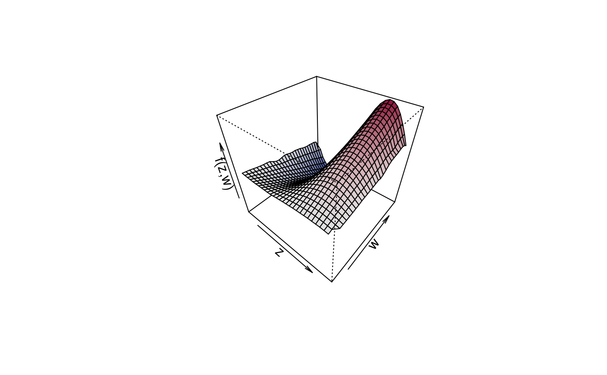

sliceplot.RdThis function plots slices from user defined values of bivariate surfaces.
sliceplot(x, y = NULL, z = NULL, view = 1, c.select = NULL, values = NULL, probs = c(0.1, 0.5, 0.9), grid = 100, legend = TRUE, pos = "topright", digits = 2, data = NULL, rawdata = FALSE, type = "mba", linear = FALSE, extrap = FALSE, k = 40, rug = TRUE, rug.col = NULL, jitter = TRUE, ...)
| x | A matrix or data frame, containing the covariates for which the effect should be plotted
in the first and second column and at least a third column containing the effect. Another
possibility is to specify the plot via a |
|---|---|
| y | If |
| z | If |
| view | Which variable should be used for the x-axis of the plot, the other variable will be
used to compute the slices. May also be a |
| c.select | Integer, selects the column that is used in the resulting matrix to be
used as the |
| values | The values of the |
| probs | Numeric vector of probabilities with values in [0,1] to be used within function
|
| grid | The grid size of the surface where the slices are generated from. |
| legend | If set to |
| pos | The position of the legend, see also function |
| digits | The decimal place the legend values should be rounded. |
| data | If |
| rawdata | If set to |
| type | Character, which type of interpolation method should be used. The default is
|
| linear | Logical, should linear interpolation be used withing function
|
| extrap | Logical, should interpolations be computed outside the observation area (i.e., extrapolated)? |
| k | Integer, the number of basis functions to be used to compute the interpolated surface
when |
| rug | Add a |
| jitter | |
| rug.col | Specify the color of the rug representation. |
| … |
Similar to function plot3d, this function first applies bivariate interpolation
on a regular grid, afterwards the slices are computed from the resulting surface.
Function sliceplot can use the akima package to construct smooth interpolated
surfaces, therefore, package akima needs to be installed. The akima package has an ACM
license that restricts applications to non-commercial usage, see
http://www.acm.org/publications/policies/softwarecrnotice
Function sliceplot prints a note referring to the ACM license. This note can be suppressed by
setting
## Generate some data. set.seed(111) n <- 500 ## Regressors. d <- data.frame(z = runif(n, -3, 3), w = runif(n, 0, 6)) ## Response. d$y <- with(d, 1.5 + cos(z) * sin(w) + rnorm(n, sd = 0.6))# NOT RUN { ## Estimate model. b <- bamlss(y ~ te(z, w), data = d) summary(b) ## Plot estimated effect. plot(b, term = "te(z,w)", sliceplot = TRUE) plot(b, term = "te(z,w)", sliceplot = TRUE, view = 2) plot(b, term = "te(z,w)", sliceplot = TRUE, view = "w") plot(b, term = "te(z,w)", sliceplot = TRUE, probs = seq(0, 1, length = 10)) # }